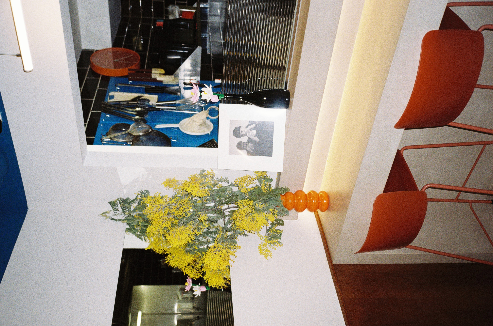
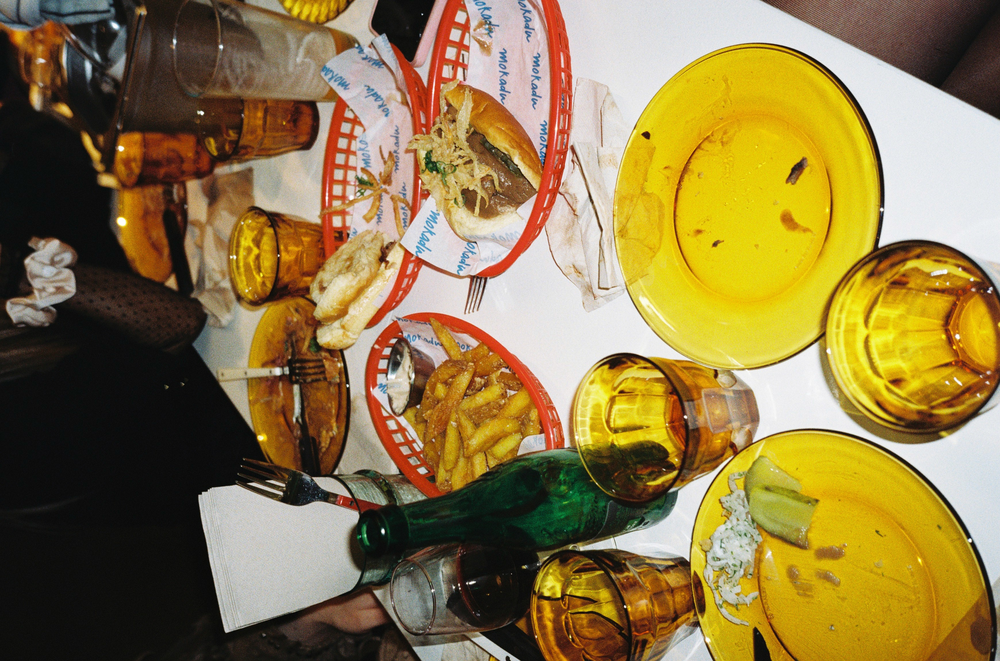
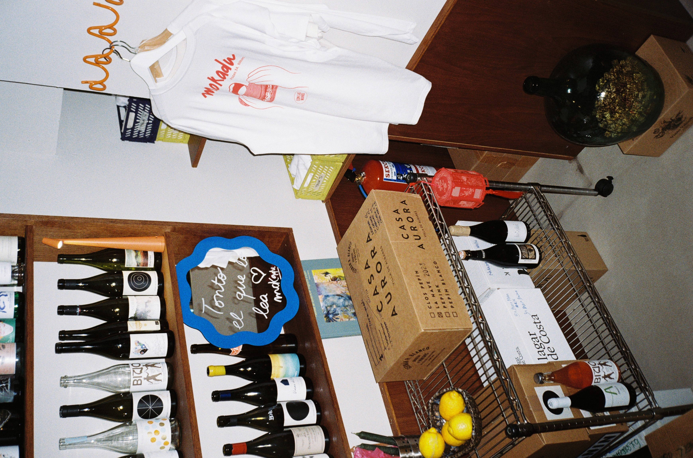
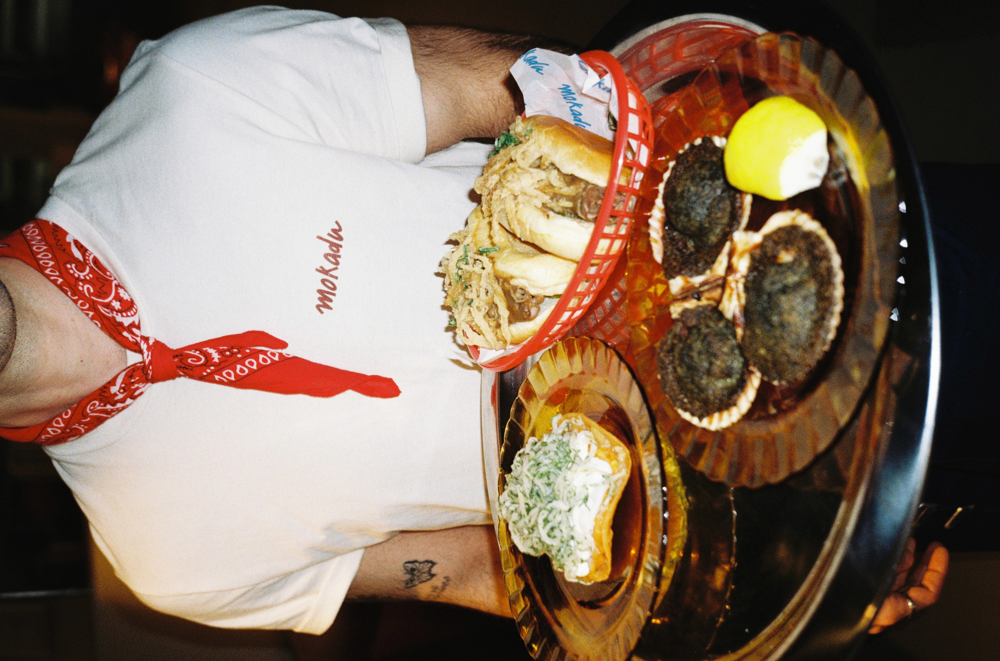
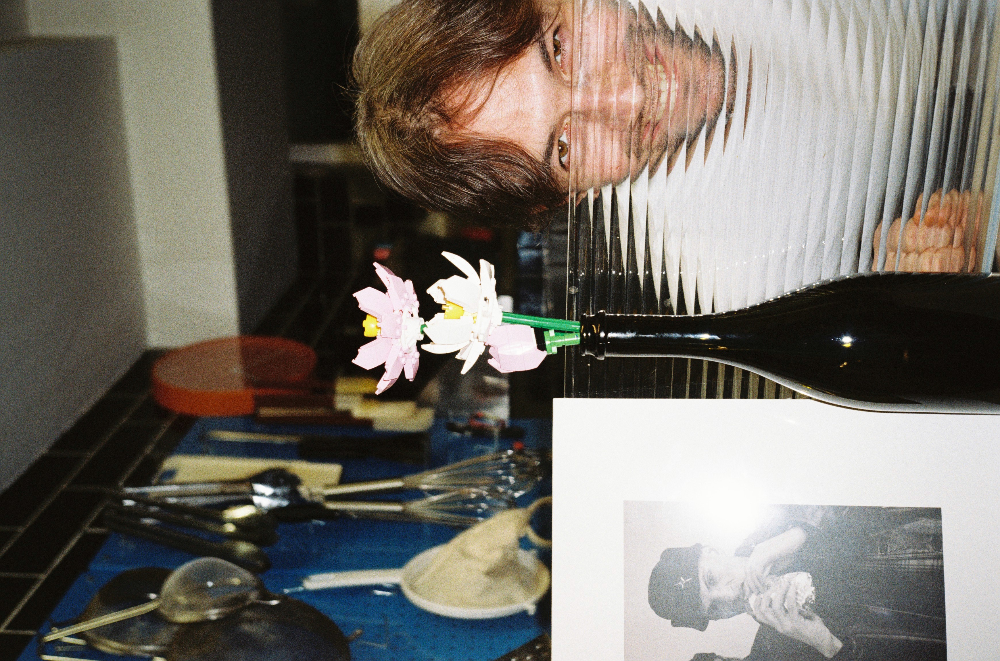
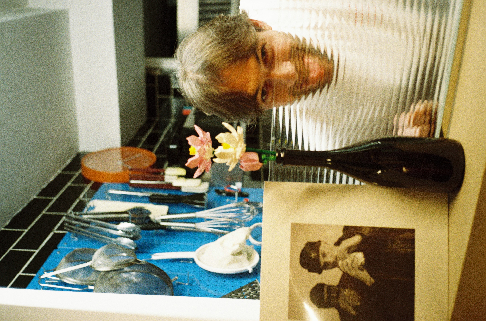

Con las manos
Sandwiches · Cócteles · Vinos · Licenciado Poza, 34 · Bilbao
Ver la carta Reservar mesa
En Mokadu elevamos el bocadillo a categoría gastronómica. Sabores del mundo, técnica honesta, productos de calidad — todo pensado para comerse con las manos.
Un espacio íntimo en el barrio de Pozas, con alma de bistró y espíritu propio.



Desliza para leer
Sitio diferente a lo que hay en Bilbao. El Nikita es una locura — bonito crudo, aguacate, arroz... muy bien pensado. Y los frozens excelentes. Volveremos sin duda.
La selección de vinos sorprende mucho para un local tan íntimo. Inés tiene muy buen ojo. Los bocadillos están a otro nivel, nada que ver con un sandwich normal.
El Rosbiti y la Chilenita están impresionantes. Ambiente acogedor, equipo muy simpático. El espresso gin-tonic también lo vale. Sitio con mucha personalidad.
Fuimos cuatro a cenar y pedimos casi todo. No había ningún plato malo. Los brigadeiros al final son adictivos. Reservad porque tiene poca mesa.
De los mejores sitios que hemos probado en el Ensanche. El PDT para empezar es obligatorio. La carta cambia con la temporada, lo que mantiene las ganas de volver.
Descubrimiento del año en Bilbao. Cócteles de calidad, vinos de pequeños productores muy bien seleccionados y comida muy elaborada. Todo a precio razonable.
La carta de Mokadu evoluciona. Aquí, el archivo de lo que hemos sido y lo que somos ahora.

Ago 2025 — Jun 2026
Primera temporada
Jun 2026 — Hoy
Temporada actualEl menú cambia con la temporada. Para saber qué hay hoy, pregunta por WhatsApp.
Desliza para ver

Reserva online o escríbenos por WhatsApp. No atendemos el teléfono durante el servicio.
Reservar mesa WhatsApp